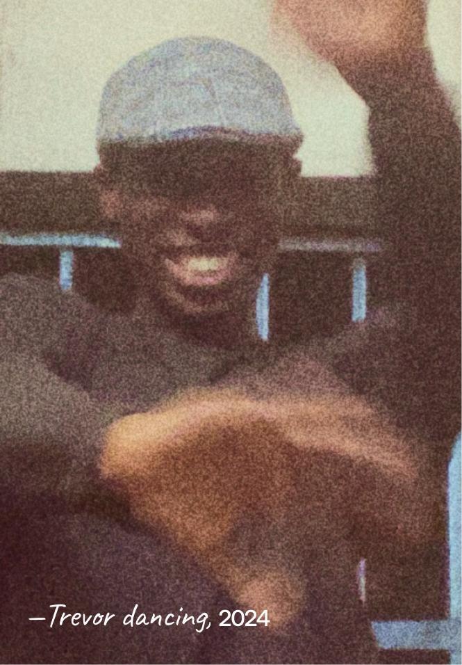

Trevor C. Justus
is a creative, in love with technology, photography, and building awesome things.
—in love with learning new stuff. I’m always pushing the boundaries of what I can do. Currently taking CS50.
Capturing the world around me is a hobby I can’t get enough of.
I plan get into photography and filmmaking professionally
Oh, I love drones too!